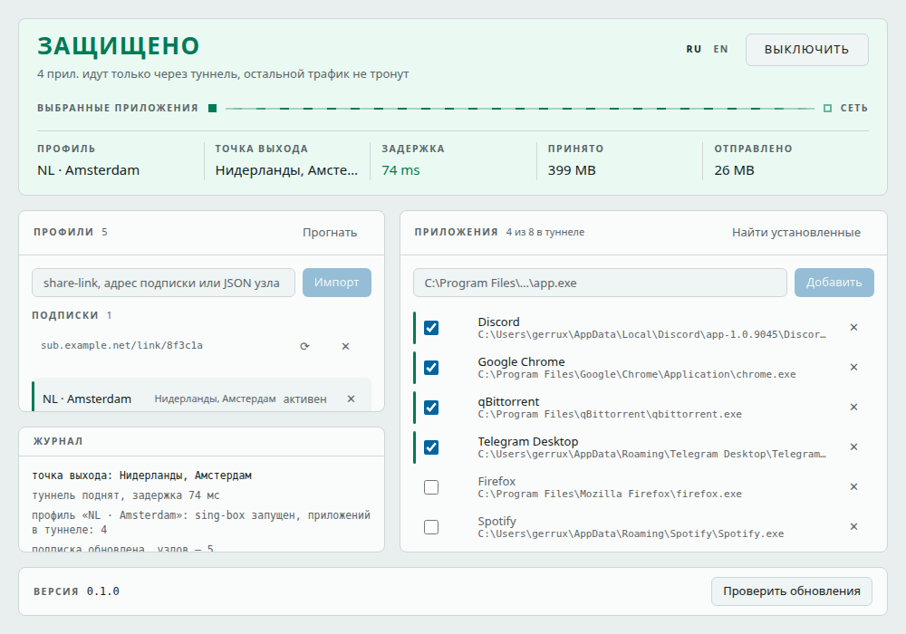
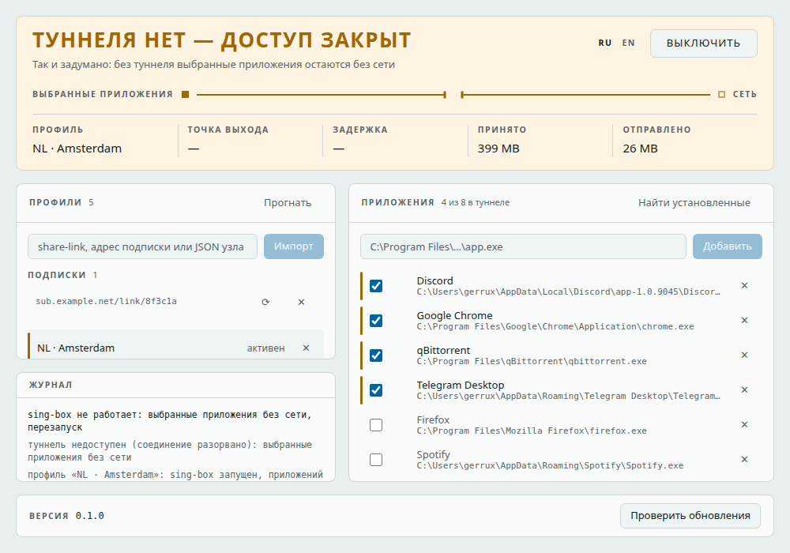

частный шлюз для рабочего компьютера
Выбранные вами программы ходят в сеть только через ваш туннель. Промежуточных состояний с прямым доступом не существует: пока туннель не подтверждён, у них просто нет сети. Трафик остальных не трогается вообще.
Windows 10 и 11. Своей сети у продукта нет: туннель — ваш собственный сервер.
Отбор происходит в брандмауэре, до всякого туннеля.
Пока приватный режим включён, в брандмауэре стоит запрет всего исходящего. Выбранным программам при подтверждённом туннеле выдаётся пропуск сквозь него — запрет не снимается, иначе сеть открылась бы всем сразу.
В конфиге туннеля нет маршрута мимо него: ни правил по имени процесса, ни выхода «напрямую». Пропуск привязан к адресу туннеля, поэтому пакет с физического интерфейса под него не подпадает.
Ни список программ, ни охват в конфиг не входят, поэтому их правка не перезапускает туннель. Живые соединения — SSH, загрузки, звонки — её переживают.
Состояние — главное, что показывает окно, поэтому оно занимает верх.


Белый список — сеть только выбранным и только через туннель. Весь компьютер — в туннель идёт всё. Инвариант один и тот же, меняется только то, кого он касается.
Отдельные окна со своим узлом, User-Agent и языком. У каждого свой каталог сеанса и свой цвет значка в панели задач.
Подписка обновляется по https и заменяет профили молча, не гася туннель. Прогон меряет задержку по всем узлам сразу, на своём sing-box и своих портах.
Ни телеметрии, ни журналов трафика. Проба по умолчанию идёт на ваш собственный сервер. Соответствие «адрес — имя» на диск не пишется.